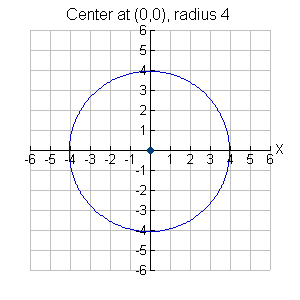
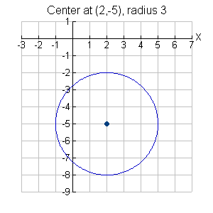

Circles
Definition
a locus of points in a plane equidistant from a fixed point
General Form
x2 + y2 + Dx + Ey + F = 0
Equation for Center at Origin
x2 + y2 = r2 r = radius
Equation for Center (h,k)
(x-h)2 + (y-k)2 = r2 r = radius
Discriminant
The conic section is a CIRCLE if B2 - 4AC < 0 and A = C.

